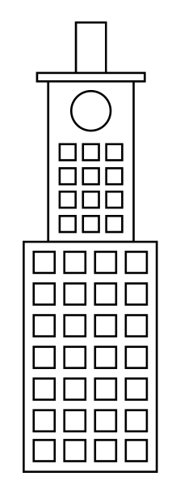
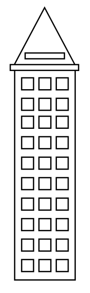
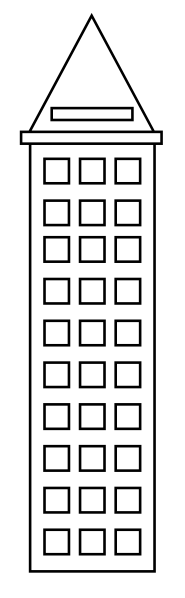
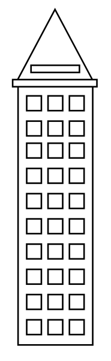
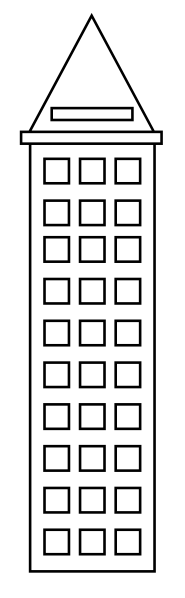
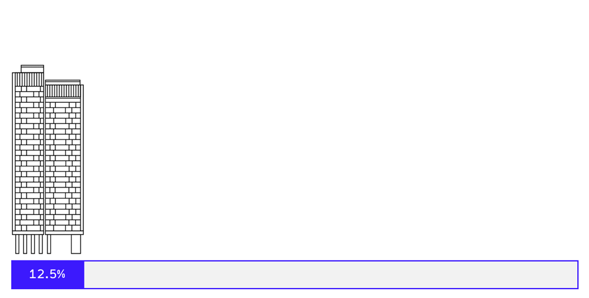

Summer Mission
NYC 2K16
spontaneity! adventure! curiosity!
 



On Saturday, you arrive at Central Park, eager to find out what the mission is.
Turns out, the weather was phenomenal and Kanye West's charity pop-up shop was set up for the day. You soaked up some Vitamin D and bought a pair of Yeezys for a good cause.
While you were there, you also happened to meet 10 other people on the same 8 week interactive experience as you. You ended up discussing the psychology of happiness and whether or not hedonism is ethical.
+friends! +new shoes! +knowledge!
Each week, you will be given another mission. By the end of the 8 weeks, you should be well adapted to the city, and should have made a lot of new connections along the way. This allows you to thoroughly enjoy the remaining 3 months of summer on your own!
Loading progress...
The congratulatory prize remains a mystery until you complete the mission yourself. Who knows, you may just be chosen to receive the link for this summer.
Jia Gao's final project for the class, Editorial Design for Screen (RISD Spring 2016), taught by Dylan Greif.
A unique editorial experience for screen. The original publication: "Summer Survival Kit for Recession Casualties and Inflation Victims" July 1970.